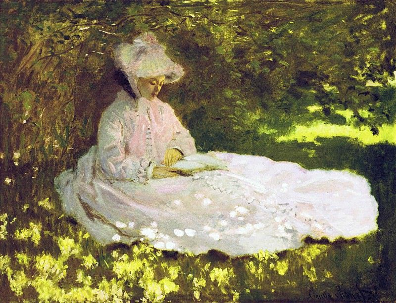

O que é impressionismo? Características, artistas e obras famosas
Como um grupo de pintores independentes mudou o jeito de pintar a luz, de onde veio o nome do movimento e por que Van Gogh é considerado pós-impressionista.

O impressionismo foi um movimento artístico que surgiu na França na década de 1870, quando um grupo de pintores decidiu expor por conta própria, fora do Salão oficial de Paris. Em vez de cenas históricas com acabamento liso, esses artistas pintavam a luz de um instante, a vida moderna e paisagens observadas ao ar livre, com cores vivas e pinceladas soltas e visíveis.
Este guia percorre a história do impressionismo desde a primeira exposição, explica de onde veio o nome, quais são as características do impressionismo, quem foram os principais pintores impressionistas e por que Vincent van Gogh, embora muito ligado a essa história, é considerado um pós-impressionista.
Em resumo
- Quando: a primeira exposição do grupo abriu em 15 de abril de 1874, em Paris. Ao todo foram oito exposições, a última em 1886.
- O que buscava: registrar a luz, a cor e a atmosfera de um momento, com pinceladas soltas e cores puras.
- Quem: Claude Monet, Pierre-Auguste Renoir, Edgar Degas, Berthe Morisot, Camille Pissarro, Alfred Sisley, Mary Cassatt e Gustave Caillebotte, entre outros.
- E Van Gogh? Foi influenciado pelo impressionismo em Paris, mas pertence ao pós-impressionismo.
Como o impressionismo começou
Na França do século XIX, a principal vitrine para um pintor era o Salão, a grande exposição oficial de Paris. Ser aceito ou recusado pelo júri podia definir uma carreira, e o gosto oficial favorecia temas considerados nobres e pinturas de acabamento minucioso.
Para não depender desse sistema, um grupo de artistas criou uma sociedade independente, a Sociedade Anônima dos Artistas Pintores, Escultores, Gravadores etc., e organizou a própria mostra. Ela abriu em 15 de abril de 1874, no antigo estúdio do fotógrafo Nadar, no Boulevard des Capucines, reunindo mais de 30 artistas. Entre eles estavam Monet, Renoir, Degas, Morisot, Pissarro, Sisley e Cézanne.
A exposição não era um manifesto de estilo. Segundo o Metropolitan Museum of Art, o que unia os participantes era sobretudo a independência em relação ao Salão. Depois de 1874 o grupo realizou mais sete exposições, até 1886. Camille Pissarro foi o único a participar de todas, e Berthe Morisot esteve em sete delas.
De onde vem o nome “impressionismo”
Uma das telas apresentadas por Claude Monet em 1874 mostrava o porto de Le Havre ao amanhecer, entre névoa, guindastes e mastros, com um sol alaranjado refletido na água. Pintado em 1872, o quadro recebeu o título Impressão, nascer do sol (Impression, soleil levant). Segundo o Musée Marmottan Monet, que guarda a obra, Monet escolheu esse nome porque a tela não poderia passar por uma simples vista de Le Havre.
O crítico Louis Leroy aproveitou o título para ironizar o grupo em um artigo publicado em 25 de abril de 1874 no jornal satírico Le Charivari, chamado “A exposição dos impressionistas”. Para ele, aquelas pinturas pareciam esboços, e não obras acabadas. A palavra, que nasceu como deboche, foi depois usada em sentido positivo por outros críticos, como Jules Castagnary, e acabou nomeando o movimento.
Características do impressionismo
Mais do que uma fórmula, o impressionismo foi um jeito novo de olhar. Algumas características aparecem com frequência nas obras do movimento.
A luz como assunto
Os impressionistas queriam registrar como a luz transforma uma cena em um momento específico do dia. Sombras e reflexos passaram a ser pintados com cores, em vez de cinzas e pretos neutros. Uma sombra na neve podia ser azul; um reflexo na água, laranja e violeta.
Pinceladas soltas e visíveis
Em vez de esconder o trabalho do pincel, os impressionistas usavam pinceladas curtas e fragmentadas, com cores puras colocadas lado a lado. De perto, a superfície parece um conjunto de manchas; a alguns passos de distância, a cena se forma. Apesar da aparência espontânea, muitas composições eram cuidadosamente planejadas.
Cores vivas
Novos pigmentos sintéticos ampliaram a paleta dos pintores. Somadas à ausência do verniz dourado comum na época, essas cores tornavam as telas impressionistas chocantes para um público acostumado aos tons mais sóbrios da pintura acadêmica.
Cenas da vida moderna
Os temas também mudaram. Saíram as grandes cenas históricas e mitológicas e entraram o lazer no campo e nos subúrbios, os trens e as fábricas na paisagem, a Paris recém-reformada, os cafés, os concertos e os bailes.
Pintura ao ar livre
Muitos impressionistas pintavam diretamente diante do motivo, ao ar livre, ou en plein air, para observar a luz real. A prática já existia antes deles, mas ganhou força no período. É comum ler que a bisnaga de tinta de metal, patenteada pelo pintor americano John Goffe Rand no início da década de 1840, facilitou o trabalho fora do ateliê. Historiadores lembram, porém, que cavaletes portáteis e caixas de pintura também tiveram papel importante.

Pintura acadêmica e impressionismo: as principais diferenças
| Aspecto | Pintura acadêmica do Salão | Impressionismo |
|---|---|---|
| Temas | Cenas históricas, mitológicas e religiosas, retratos formais | Paisagens, cidade moderna, lazer e cotidiano |
| Acabamento | Superfície lisa, pinceladas escondidas | Pinceladas visíveis e soltas |
| Cor e sombra | Sombras em tons escuros e neutros | Sombras coloridas e cores puras lado a lado |
| Onde se pintava | Principalmente no ateliê | Muitas vezes ao ar livre, diante do motivo |
| Objetivo | Idealizar e narrar | Registrar a percepção de um instante |
Principais pintores impressionistas
- Claude Monet (1840–1926). O nome mais associado ao movimento. Voltava ao mesmo motivo em horários e estações diferentes para estudar a luz, como nas séries dos montes de feno e das ninfeias.
- Pierre-Auguste Renoir (1841–1919). Cenas de lazer, festas e retratos cheios de luz, como Baile no Moulin de la Galette (1876).
- Edgar Degas (1834–1917). Bailarinas, corridas de cavalo e bastidores, com enquadramentos inesperados. Também trabalhou intensamente com pastel.
- Berthe Morisot (1841–1895). Cenas íntimas e domésticas pintadas com pinceladas muito leves. Participou da primeira exposição, em 1874, com O berço.
- Camille Pissarro (1830–1903). Paisagens rurais e vistas urbanas. Foi o único a expor nas oito mostras do grupo.
- Alfred Sisley (1839–1899). Rios, céus e vilarejos dos arredores de Paris.
- Mary Cassatt (1844–1926). Americana radicada em Paris, conhecida pelas cenas de mães e crianças.
- Gustave Caillebotte (1848–1894). Pintor e colecionador que apoiou o grupo, autor de Rua de Paris, dia chuvoso (1877).
Édouard Manet, frequentemente associado ao grupo, foi uma referência importante para esses pintores, mas não participou das exposições impressionistas.
Impressionismo e pós-impressionismo: onde entra Van Gogh
Vincent van Gogh (1853–1890) aparece com frequência em listas de pintores impressionistas, mas, do ponto de vista histórico, ele pertence ao pós-impressionismo. O termo foi criado pelo crítico inglês Roger Fry em 1910, quando organizou a exposição Manet and the Post-Impressionists. Segundo a Tate, ele costuma se referir a quatro nomes principais: Paul Cézanne, Paul Gauguin, Georges Seurat e Van Gogh.
Esses artistas partiram das conquistas do impressionismo, como a cor clara e a pincelada visível, mas seguiram caminhos próprios. Cézanne buscou estrutura e solidez; Seurat deu à cor uma base científica, com pequenos pontos; Gauguin abandonou a pintura direta da natureza em favor de temas imaginativos; e Van Gogh usou cor e pincelada para expressar emoção.
O encontro de Van Gogh com o impressionismo aconteceu em Paris. Ele se mudou para a cidade em fevereiro de 1886, para morar com o irmão Theo, comerciante de arte, e ali conheceu de perto as pinturas impressionistas e o neoimpressionismo de Seurat e Paul Signac. Segundo o Metropolitan Museum of Art, nesse período ele clareou a paleta, experimentou as pinceladas fragmentadas dos impressionistas e o toque pontilhista dos neoimpressionistas e pintou mais de vinte autorretratos explorando contrastes de cores complementares. Em fevereiro de 1888, partiu para Arles, no sul da França, onde sua cor ficou ainda mais intensa e expressiva.
| Aspecto | Impressionismo | Pós-impressionismo |
|---|---|---|
| Período | Exposições do grupo entre 1874 e 1886 | A partir de cerca de 1886 |
| Objetivo | Captar a luz e a impressão visual de um instante | Ir além da observação: estrutura, símbolo e emoção |
| Cor | Clara e observada na natureza | Mais livre e expressiva |
| Pincelada | Curta, solta e fragmentada | Varia: pontos em Seurat, planos construídos em Cézanne, traços marcados em Van Gogh |
| Artistas | Monet, Renoir, Degas, Morisot, Pissarro, Sisley | Cézanne, Gauguin, Seurat, Van Gogh |
Obras impressionistas famosas para conhecer
- Impressão, nascer do sol, Claude Monet, 1872. Musée Marmottan Monet, Paris.
- Primavera, Claude Monet, 1872. The Walters Art Museum, Baltimore.
- O berço, Berthe Morisot, 1872. Musée d'Orsay, Paris.
- Baile no Moulin de la Galette, Pierre-Auguste Renoir, 1876. Musée d'Orsay, Paris.
- Rua de Paris, dia chuvoso, Gustave Caillebotte, 1877. The Art Institute of Chicago.
- Caminhada no penhasco em Pourville, Claude Monet, 1882. The Art Institute of Chicago. É a pintura que abre este artigo: o vento na grama, o brilho do mar e as nuvens são construídos com pinceladas curtas e cores puras.
O impressionismo como inspiração hoje
Mais de 150 anos depois da primeira exposição, o impressionismo continua inspirando quem pinta, fotografa ou simplesmente gosta de observar a luz. Na página Sobre, Mariane Nunes cita Monet, Degas e Van Gogh entre as referências que a acompanham, pela forma como esses pintores tratam o movimento, a luz e a cor. São inspirações, e não a filiação a uma escola.
Em obras como Veneza ao Entardecer e Caminho ao Entardecer, a luz do fim de tarde e as cores intensas são protagonistas, um diálogo livre com esse modo de olhar.
A mesma paixão deu origem a dois planners digitais. O En Plein Air, cujo nome faz referência à pintura ao ar livre, é inspirado na pintura impressionista e traz páginas de observação de obras, com perguntas e curiosidades. O Luminous Days é inspirado em Van Gogh e inclui encontros guiados com obras como Íris, Girassóis e Amendoeira em Flor. Para levar essa conversa para o dia a dia, veja também como usar um planner digital.
Como olhar uma pintura impressionista
A melhor forma de entender o impressionismo é olhar com calma. Escolha uma obra, observe de perto as pinceladas e as cores que formam as sombras e depois se afaste alguns passos. É nesse vaivém que a pintura se completa. E, se quiser experimentar a ideia no papel, o guia de técnicas de giz pastel oleoso mostra como construir cor com traços visíveis.
Fontes
- Paris 1874: The Impressionist Moment (comunicado de imprensa), National Gallery of Art
- Impression, soleil levant, Musée Marmottan Monet
- Impressionism: Art and Modernity, The Metropolitan Museum of Art
- Vincent van Gogh (1853–1890), The Metropolitan Museum of Art
- Post-impressionism, Tate
- Cliff Walk at Pourville, The Art Institute of Chicago
- Springtime, The Walters Art Museum
- John Goffe Rand, Linda Hall Library